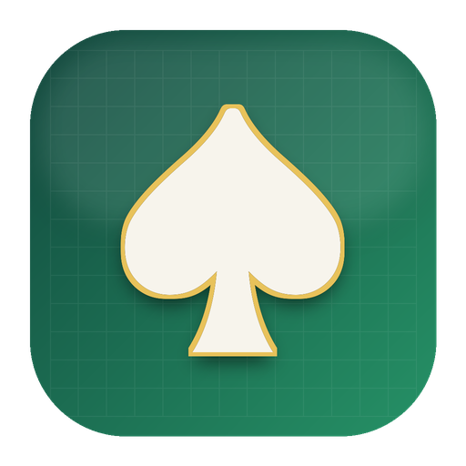

Poker GTO, ranges & ICM — a study tool for macOS.
Покерное GTO, ренжи и ICM — инструмент для изучения теории на macOS.
RangeForge is a fast, native workbench for studying poker theory. It brings equilibrium ranges, ICM, equity and a postflop solver into one clean macOS app. Everything is computed on your Mac — there are no accounts, no internet connection and no data collection.
RangeForge — быстрый нативный инструмент для изучения теории покера. Равновесные ренжи, ICM, эквити и постфлоп-солвер собраны в одном приложении для macOS. Все расчёты идут на вашем Mac: без аккаунтов, без интернета и без сбора данных.
Unexploitable shove and calling ranges for tournament spots with 2–10 players. Stacks, blinds, antes and payouts; chip-EV or ICM; solved with Monte-Carlo CFR.
Невыгодные для эксплуатации ренжи шова и колла для турнирных спотов на 2–10 игроков. Стеки, блайнды, анте и выплаты; chip-EV или ICM; решается методом Monte-Carlo CFR.
Turn chip stacks into prize-pool equity with the Malmuth–Harville model, and read the fair chip-chop numbers straight off it.
Перевод стеков в долю призового фонда по модели Malmuth–Harville и честные суммы для чип-чоп дележа.
Win/tie equity for up to six players on any board — exact enumeration for fixed hands, fast Monte-Carlo for ranges.
Шансы на победу для шести игроков на любой доске — точный перебор для конкретных рук, быстрое Монте-Карло для ренжей.
A heads-up solver on Discounted CFR+ with exact, blocker-aware showdowns. Read the strategy as an action-frequency heat map.
Хедз-ап солвер на Discounted CFR+ с точным шоудауном и учётом блокеров. Стратегия читается как тепловая карта частот действий.
Paint ranges across the 13×13 grid with weight brushes for mixed strategies, a Top-N% selector, presets and two-way sync with standard notation.
Рисование ренжей по матрице 13×13, кисти весов для смешанных стратегий, выбор «Топ N%», пресеты и двусторонняя синхронизация со стандартной нотацией.
Import a hand-history file exported by your poker client, step through hands on a felt table, and have push/fold decisions reviewed automatically against the solver.
Импорт файла с историей рук, выгруженного вашим покерным клиентом, пошаговый просмотр раздач за столом и автоматический разбор push/fold решений против солвера.
RangeForge has no network access at all. It is sandboxed without the network entitlement, so macOS itself prevents it from connecting anywhere. It contains no analytics, no accounts and no tracking of any kind. Hand-history files you import are read on your Mac and never leave it.
У RangeForge вообще нет доступа к сети. Приложение работает в песочнице без сетевого разрешения — macOS сама не даст ему никуда подключиться. В нём нет аналитики, аккаунтов и никакого отслеживания. Файлы с историей рук читаются на вашем Mac и никуда не отправляются.
Read the full privacy policy → Полная политика конфиденциальности →
Questions, bug reports and feature requests all go to one place:
Вопросы, сообщения об ошибках и пожелания — на один адрес:
Replies usually arrive within a few days. To get a useful answer on the first exchange, please include:
Обычно отвечаю в течение нескольких дней. Чтобы разобраться с первого раза, приложите:
Please do not attach hand-history files unless I ask for one. They contain your play and other players' screen names, and support does not need them to reproduce most problems.
Не прикладывайте файлы с историей рук, пока я их не попрошу. В них ваша игра и ники других игроков, а для воспроизведения большинства проблем они не нужны.
macOS 14 (Sonoma) or later, on Apple silicon or Intel. RangeForge works fully offline — no internet connection is needed at any point, including first launch.
macOS 14 (Sonoma) или новее, Apple silicon или Intel. RangeForge полностью работает офлайн — интернет не нужен ни на одном этапе, включая первый запуск.